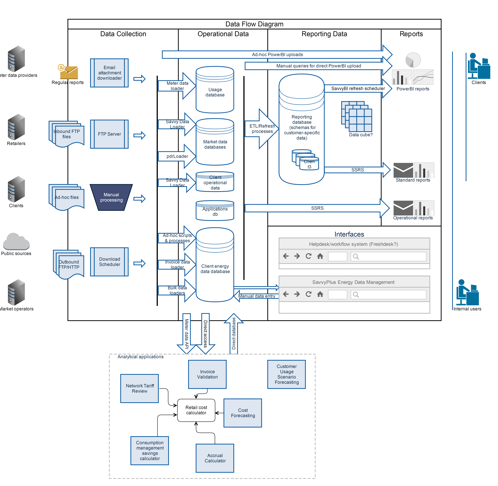

Created by Andrew Dodds, last modified on May 30, 2017
At a high level, the data flow is set out in the table below.
| System Layer | Activity | Key Components |
|---|
| Data Collection Layer | Data is collected via various channels: - Regular emailed reports
- Passive & active (S)FTP transfers
- FTP/HTTP downloads
- Manually by users
| - Email Attachment Downloader
- SavvyDownloadScheduler
- FTP Server
- User-accessible file shares
|
| Data Bus & File Storage Layer | - Files are queued and prioritised for processing.
- Processed files are archived and retention policies applied.
- File transfers between MEL and DC environments take place
| - File system
- Archiving/cleanup scripts
- Folder synchronisation software
|
| Data Loading Layer | - Files are processed and data loaded into system
- Error files are set aside for reprocessing and further review
- Version control of data is applied
- Monitoring of data feeds takes place
| - SavvyDataLoader
- MeterDataLoader
- InvoiceLoader
- pdrLoader
- Monitoring jobs
|
| Database Layer | - Data is stored in relational form
- Views are applied to:
- combine similar data from multiple sources
- provide more user-friendly formats for operational tasks
- Functions, stored procedures and views for:
- monitoring
- data verification and cleansing
- collating inputs for applications
| Key databases: - MarketData
- MeterDataDB
- EnergyAccounting
- InvoiceLoaderDB
- ElecMMS
- ApplicationsDB
|
| Data Management and Application Layer | - Manual data management tasks performed via web portal GUI
- Bulk data uploads via templates
- Budgets, cost outlooks, invoice validation, NTRs
- Meter data forecasting & aggregation
| - Web Portal
- Cost Calculator
- NTR Calculator
- Spot Forecasting
- Meter Data Extractor
|
| Reporting ETL Layer | - Preparation of flat, convenient reporting tables and views
- Recording of data change history
| - MakeReportingTable scripts
- Report_Staging database
- Reporting database
|
A visual representation of the system is shown in the figure below.

{kind=link}